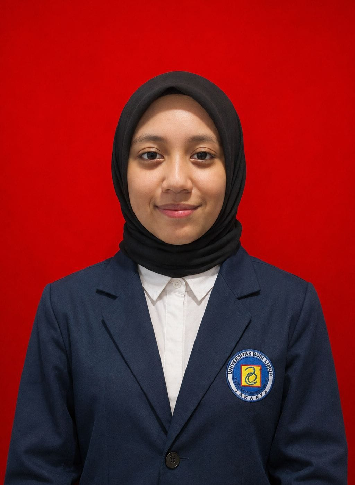

Queena Kaila Alyndra
ㅤ
About the Author
Halo! Saya Queena, mahasiswi Teknik Informatika di Universitas Budi Luhur yang memiliki ketertarikan besar di bidang pengembangan web. Website ini saya gunakan sebagai wadah untuk mendokumentasikan hasil belajar, tugas, dan rangkuman materi kuliah saya mengenai Tren Teknologi Informasi.
Saat ini saya sedang menempuh pendidikan S1 Teknik Informatika di Universitas Budi Luhur. Fokus utama saya adalah mempelajari teknologi frontend web development seperti HTML, CSS, dan JavaScript. Proyek ini merupakan bagian dari tugas Tren Teknologi Informasi, sekaligus langkah awal saya dalam membangun portofolio digital menuju karier profesional di industri teknologi.
Selamat datang di ruang digital saya! Saya Queena, seorang tech-enthusiast yang sedang belajar di Teknik Informatika Universitas Budi Luhur. Saya suka mengeksplorasi bagaimana teknologi mempermudah kehidupan manusia sehari-hari. Di sini, Anda bisa melihat rangkuman materi kuliah dan perkembangan belajar saya dalam dunia IT. Enjoy your stay!
Pengenalan Teknologi Informasi dan Perkembangannya dalam Kehidupan
Teknologi informasi merupakan bagian penting dalam kehidupan sehari-hari dan terus berkembang sehingga pengguna perlu memiliki literasi digital. Komputer adalah perangkat elektronik yang bekerja berdasarkan instruksi untuk menerima data sebagai input, memprosesnya, dan menghasilkan informasi. Perangkat yang digunakan dalam teknologi informasi sangat beragam, seperti laptop, tablet, desktop, server, smartphone, kamera digital, perangkat game, dan wearable device.
Dalam penggunaannya, komputer memiliki berbagai perangkat input, output, memori, dan penyimpanan. Input dapat dilakukan melalui keyboard, pointing device, suara, video, dan scanner, sedangkan output dapat ditampilkan melalui printer, display, dan speaker. Data yang berupa teks, angka, gambar, audio, atau video dapat diproses menjadi informasi yang memiliki makna dan dapat digunakan untuk membantu berbagai aktivitas serta pengambilan keputusan.
Teknologi informasi juga berkaitan erat dengan Internet, Web, dan komunikasi digital. Internet merupakan kumpulan jaringan komputer di seluruh dunia, sedangkan web menyediakan berbagai informasi dalam bentuk halaman dan situs web. Pengguna dapat mengakses informasi melalui browser dan mencari informasi menggunakan search engine. Selain itu, terdapat berbagai teknologi komunikasi seperti email, instant messaging, GPS, video conference, Wi-Fi, Bluetooth, dan jaringan seluler yang memungkinkan perangkat saling terhubung dan bertukar informasi.
Selain perangkat keras, teknologi informasi juga membutuhkan software atau aplikasi untuk menjalankan berbagai tugas. Sistem operasi dan aplikasi membantu pengguna berinteraksi dengan perangkat dan melakukan aktivitas tertentu. Teknologi dan jaringan kemudian dimanfaatkan dalam berbagai bidang, seperti pendidikan, pemerintahan, keuangan, retail, hiburan, kesehatan, ilmu pengetahuan, perjalanan, penerbitan, dan manufaktur.
Seiring meningkatnya penggunaan teknologi, pengguna juga perlu memperhatikan keamanan digital, privasi, kesehatan, dan lingkungan. Risiko seperti virus dan malware perlu diantisipasi, sementara penggunaan teknologi juga harus memperhatikan dampaknya terhadap lingkungan, misalnya dengan menggunakan perangkat hemat energi, mendaur ulang, dan memperpanjang masa penggunaan perangkat.
Selain itu, penggunaan komputer perlu memperhatikan kesehatan dan kenyamanan pengguna. Penggunaan teknologi yang tidak tepat dapat berkaitan dengan masalah seperti repetitive strain injury dan computer vision syndrome. Ergonomi diperlukan agar penggunaan perangkat lebih nyaman, efisien, dan aman.
Kesimpulannya, teknologi informasi mencakup berbagai perangkat, software, jaringan, Internet, dan layanan digital yang saling berkaitan. Perkembangan teknologi memberikan banyak kemudahan dalam belajar, bekerja, berkomunikasi, dan menjalankan berbagai kegiatan, sehingga pemahaman serta literasi digital menjadi penting agar teknologi dapat digunakan secara efektif dan bertanggung jawab.
Klasifikasi, Konektivitas, dan Proteksi Perangkat Komputasi
Perkembangan teknologi modern menghadirkan berbagai jenis komputer dan perangkat seluler yang dirancang spesifik untuk kebutuhan individu maupun organisasi. Kategori utama meliputi komputer personal seperti laptop dan desktop untuk pengguna tunggal, serta server, mainframe, dan superkomputer berkapasitas besar yang mampu melayani ribuan pengguna sekaligus atau memproses data massal dengan kecepatan tinggi. Di sektor ritel dan publik, terminal khusus seperti mesin ATM, mesin kasir POS, dan kios swalayan (self-service kiosk) umum digunakan untuk mempermudah transaksi secara mandiri. Sementara itu, mobilitas pengguna didukung oleh jajaran perangkat portabel seperti smartphone, kamera digital, pemutar media, e-book reader, wearable device, konsol game, hingga embedded computer yang terintegrasi langsung pada komponen produk lain seperti mobil dan sistem otomasi rumah. Sebagian besar ekosistem perangkat ini juga memanfaatkan komputasi awan (cloud computing) untuk mengakses sumber daya dan layanan data secara fleksibel melalui jaringan internet.
Agar dapat berinteraksi dengan perangkat tambahan lainnya, sistem komputer memanfaatkan port dan konektor fisik seperti kabel USB yang mampu menghubungkan hingga 127 periferal berbeda melalui satu jalur komunikasi. Bagi pengguna laptop atau tablet yang membutuhkan fleksibilitas, penggunaan port replicator atau docking station menjadi solusi praktis tanpa harus mencolokkan kabel secara langsung satu per satu. Di sisi lain, adopsi teknologi nirkabel (wireless) seperti Bluetooth, Wi-Fi, dan NFC semakin populer karena mempermudah pertukaran informasi antarperangkat tanpa ketergantungan pada kabel fisik.
Di samping fungsionalitasnya, aspek perlindungan perangkat keras (hardware) menjadi hal vital untuk meminimalkan risiko kerugian akibat tindak kejahatan atau kerusakan sistem. Keamanan fisik dari risiko pencurian dan vandalisme dapat diantisipasi melalui penerapan kontrol akses ketat, sistem alarm, perangkat kunci fisik, hingga aplikasi pelacak perangkat pintar. Sementara itu, ancaman kegagalan sistem akibat fluktuasi tegangan listrik seperti undervoltage maupun overvoltage dapat dicegah dengan menggunakan surge protector untuk menstabilkan arus. Pengguna juga disarankan memasang uninterruptible power supply (UPS) yang dilengkapi baterai cadangan terintegrasi agar perangkat tetap mendapatkan pasokan daya sementara saat terjadi pemadaman listrik secara mendadek.
Ekosistem Perangkat Lunak: Aplikasi, Komunikasi, Kinerja, dan Keamanan Sistem
Sistem komputer mengandalkan kombinasi terstruktur antara perangkat keras, sistem operasi yang mengoordinasikan aktivitas perangkat, dan perangkat lunak aplikasi untuk membantu pengguna bekerja secara efektif. Perangkat lunak didistribusikan dalam berbagai model lisensi, mulai dari aplikasi retail, aplikasi berbasis web (web app), aplikasi seluler portabel, hingga perangkat lunak gratis serta terbuka seperti shareware, freeware, open source, dan public domain. Di lingkungan operasional harian, pengguna memanfaatkan jajaran aplikasi produktivitas untuk membuat, mengedit, memformat, menyimpan, dan mendistribusikan proyek. Kategori aplikasi ini mencakup pengolah kata (word processing), presentasi, spreadsheet, pengelolaan basis data (database), pencatatan digital, manajemen kontak, proyek, hingga perangkat lunak khusus akuntansi, keuangan personal, hukum, pajak, dan kebutuhan korporat skala besar (enterprise).
Kreativitas dan interaksi digital didukung oleh perangkat lunak grafis dan multimedia seperti sistem CAD untuk desain teknik, desktop publishing, penyunting gambar, pengelolaan foto, serta perangkat editing video dan audio. Selain itu, terdapat alat bantu pengembangan multimedia interaktif, pembuatan situs web, aplikasi media player untuk memutar konten hiburan, serta perangkat lunak pembakar piringan cakram (disc burning). Kebutuhan personal pengguna dipenuhi oleh jajaran aplikasi gaya hidup, medis, hiburan, kemudahan praktis, dan edukasi. Seluruh aktivitas tersebut didukung oleh alat komunikasi digital terintegrasi yang mencakup blog, peramban internet (browsing), ruang obrolan (chat), diskusi daring, email, transfer berkas, telepon internet, pesan instan, telekonferensi video, dan umpan web (web feeds).
Untuk memastikan sistem berjalan dengan aman dan lancar, perangkat komputer memerlukan jajaran perkakas keamanan (security tools) seperti personal firewall untuk mencegah intrusi asing serta program antivirus untuk menghapus perangkat perusak di memori. Proteksi tambahan juga diberikan melalui perangkat pembersih spyware dan adware, filter anti-spam, penyaring web, filter phishing, serta pemblokir jendela iklan pop-up. Efisiensi ruang penyimpanan dan kecepatan akses data diatur melalui perkakas manajemen sistem, yang meliputi pengelola berkas (file manager), fitur pencarian otomatis, peninjau gambar (image viewer), serta aplikasi penghapus program (uninstaller). Kinerja optimal hard disk dijaga menggunakan alat pembersih sampah digital (disk cleanup) dan penata ulang ruang kosong (disk defragmenter). Terakhir, stabilitas operasional jangka panjang dilengkapi oleh screensaver, alat kompresi ukuran berkas, program pemeliharaan PC (PC maintenance), serta sistem pencadangan (backup) dan pemulihan data (restore) untuk melindungi berkas penting dari risiko kerusakan sistem.
Program dan Aplikasi Komputer
Program atau software adalah kumpulan instruksi yang memberi tahu komputer tugas apa yang harus dilakukan. Aplikasi merupakan program yang membantu pengguna menyelesaikan pekerjaan atau kebutuhan pribadi, sedangkan sistem operasi mengatur aktivitas perangkat keras komputer atau perangkat seluler. Software dapat tersedia dalam bentuk retail, custom, web app, mobile app, shareware, freeware, open source, dan public domain.
Aplikasi produktivitas membantu pekerjaan menjadi lebih efektif dan efisien. Contohnya adalah word processing untuk membuat dokumen, presentation software untuk membuat presentasi, spreadsheet untuk mengolah data dan perhitungan, database software untuk mengelola data, serta note-taking software untuk mencatat informasi. Ada juga aplikasi pengelola jadwal dan kontak, manajemen proyek, akuntansi, keuangan pribadi, dokumen hukum, pelaporan pajak, dan pengelolaan dokumen. Software suite merupakan kumpulan beberapa aplikasi yang tersedia dalam satu paket.
Software grafis dan multimedia digunakan untuk membuat, mengedit, dan memutar konten visual maupun audio. Jenisnya meliputi Computer-Aided Design (CAD) untuk membuat rancangan, desktop publishing untuk mengatur tata letak publikasi, aplikasi pengedit gambar dan foto, aplikasi pengedit video dan audio, multimedia authoring untuk menggabungkan berbagai media menjadi konten interaktif, website authoring untuk membuat halaman web, media player untuk memutar media, serta disc burning software untuk menulis data ke cakram.
Aplikasi untuk kebutuhan pribadi membantu pengguna dalam berbagai aktivitas. Contohnya adalah aplikasi gaya hidup, aplikasi medis, aplikasi hiburan, aplikasi yang mempermudah kegiatan sehari-hari, dan aplikasi pendidikan yang mendukung proses belajar.
Aplikasi komunikasi memungkinkan pengguna bertukar informasi melalui jaringan komputer atau Internet. Contohnya adalah blog, browser untuk menjelajahi website, chat dan instant messaging, email, transfer file, panggilan telepon melalui Internet, diskusi online, pesan seluler, konferensi video, dan web feeds untuk memperoleh pembaruan konten dari situs tertentu.
Perangkat keamanan digunakan untuk melindungi komputer dan data dari ancaman digital. Personal firewall membantu melindungi perangkat dari akses tidak sah, sedangkan antivirus mendeteksi dan menghapus virus. Spyware merupakan program yang diam-diam mengumpulkan informasi pengguna, sementara adware menampilkan iklan. Tersedia pula program penghapus spyware dan adware, penyaring spam, filter phishing untuk membantu mengenali penipuan, serta pemblokir jendela pop-up.
Perangkat pengelolaan file, disk, dan sistem membantu menjaga kerapian data serta kinerja komputer. File manager digunakan untuk mengelola file dan folder, search tool untuk mencari item, image viewer untuk melihat gambar, dan uninstaller untuk menghapus program. Disk cleanup menghapus file yang tidak diperlukan, disk defragmenter menata ulang data pada hard disk, file compression memperkecil ukuran file, dan PC maintenance tool membantu mendeteksi serta memperbaiki masalah sistem. Backup tool membuat salinan cadangan data, sedangkan restore tool mengembalikan data dari cadangan tersebut.
Kesimpulannya, program dan aplikasi memiliki fungsi yang berbeda sesuai kebutuhan pengguna, mulai dari membantu pekerjaan dan mengolah data hingga membuat konten, berkomunikasi, serta menjaga keamanan perangkat. Dengan memahami fungsi setiap software dan memilih aplikasi yang sesuai, aktivitas sehari-hari dapat dilakukan dengan lebih mudah, teratur, dan efisien.
Keamanan Digital, Etika, dan Privasi
- Risiko Keamanan Digital
- Serangan Internet dan Jaringan
- Akses dan Pengguna Tanpa Izin
- Pencurian Perangkat Lunak
- Pencurian, Perusakan, dan Kerusakan Perangkat Keras
- Keamanan Jaringan Nirkabel
- Etika dan Masyarakat
- Privasi Informasi
Risiko keamanan digital adalah segala kejadian atau tindakan yang dapat menyebabkan kehilangan atau kerusakan pada perangkat keras, perangkat lunak, data, informasi, maupun kemampuan pemrosesan komputer. Kejahatan yang melibatkan komputer disebut computer crime, sedangkan kejahatan yang dilakukan melalui internet disebut cybercrime. Pelakunya dapat berupa hacker, cracker, karyawan yang tidak etis, dan penjahat siber lainnya.
Serangan internet dan jaringan dapat mengganggu sistem serta membahayakan data pengguna. Salah satu ancamannya adalah malware, yaitu perangkat lunak berbahaya yang bekerja tanpa sepengetahuan pengguna. Ancaman lainnya meliputi botnet, denial of service (DoS), back door, dan spoofing. Untuk membantu melindungi jaringan dari akses yang tidak diizinkan, digunakan firewall berupa perangkat keras atau perangkat lunak.
Akses tanpa izin terjadi ketika seseorang menggunakan komputer atau jaringan tanpa persetujuan, sedangkan penggunaan tanpa izin berarti menggunakan komputer atau datanya untuk aktivitas yang tidak disetujui. Pencegahannya dapat dilakukan melalui pengaturan hak akses, penggunaan kata sandi yang kuat, PIN, perangkat autentikasi, biometrik seperti sidik jari dan pengenalan wajah, serta verifikasi dua langkah. Digital forensics juga digunakan untuk menemukan, mengumpulkan, dan menganalisis bukti digital.
Pencurian informasi adalah tindakan mengambil informasi pribadi atau rahasia tanpa izin. Salah satu cara perlindungannya adalah encryption, yaitu proses mengubah data yang dapat dibaca menjadi bentuk kode agar tidak mudah diakses pihak yang tidak berwenang. Selain itu, tanda tangan digital (digital signature) digunakan untuk memverifikasi identitas pengirim pesan, sedangkan sertifikat digital (digital certificate) membantu memastikan keaslian pengguna atau situs web.
Perangkat keras dapat mengalami pencurian, perusakan, maupun kerusakan. Untuk mengurangi dampak kehilangan data, pengguna perlu melakukan pencadangan atau backup. Backup merupakan salinan file, program, atau media yang dapat digunakan ketika data asli hilang atau rusak. Jenis backup meliputi full, differential, incremental, selective, continuous data protection, dan cloud backup. Penyimpanan salinan di lokasi terpisah juga membantu melindungi data.
Jaringan nirkabel memiliki risiko keamanan karena pihak yang tidak berwenang dapat mencoba mengakses jaringan atau memperoleh informasi rahasia. Oleh karena itu, jaringan perlu dilindungi dengan pengamanan yang tepat agar tidak digunakan sembarangan.
Etika teknologi merupakan pedoman moral dalam penggunaan komputer, perangkat seluler, sistem informasi, dan teknologi lainnya. Pengguna perlu memperhatikan keakuratan informasi karena tidak semua informasi di internet benar. Selain itu, hak kekayaan intelektual harus dihormati, termasuk hak cipta atas karya. Digital Rights Management (DRM) digunakan untuk mencegah distribusi ilegal konten digital. Kode etik membantu menentukan perilaku yang etis, sedangkan green computing bertujuan mengurangi penggunaan listrik dan limbah lingkungan akibat teknologi.
Privasi informasi adalah hak individu dan perusahaan untuk membatasi pengumpulan, penggunaan, serta penyebaran informasi tentang mereka. Data pribadi dapat tersimpan ketika seseorang mengisi formulir, membuat profil media sosial, atau mendaftarkan garansi produk. Situs web juga menggunakan cookies untuk personalisasi, menyimpan informasi tertentu, membantu belanja daring, dan menampilkan iklan yang sesuai.
Ancaman terhadap privasi meliputi phishing, clickjacking, spyware, adware, dan social engineering. Perlindungan privasi dapat dilakukan melalui kebijakan dan peraturan yang berlaku, pembatasan akses, serta penyaringan konten (content filtering) dan situs web (web filtering). Organisasi juga dapat melakukan pemantauan aktivitas karyawan menggunakan perangkat teknologi.
ㅤ
Kesimpulannya, keamanan digital, etika, dan privasi merupakan aspek penting dalam penggunaan teknologi informasi. Pengguna perlu melindungi perangkat dan data dari ancaman digital, menggunakan perangkat lunak sesuai lisensi, menghormati hak kekayaan intelektual, serta menjaga kerahasiaan informasi pribadi. Dengan menerapkan langkah keamanan dan menggunakan teknologi secara bertanggung jawab, risiko penyalahgunaan teknologi dapat dikurangi.
Struktur, Kinerja, dan Fungsionalitas Komponen internal Perangkat Komputasi
Komponen internal perangkat komputasi modern bekerja secara terintegrasi untuk memproses data digital melalui koordinasi erat antara casing, papan sirkuit utama, prosesor, sistem memori, kartu tambahan, bus komunikasi, dan catu daya.
- Casing dan Motherboard: Casing membungkus dan melindungi seluruh sirkuit elektronik sensitif dari kerusakan fisik luar. Di dalam casing terdapat motherboard sebagai papan sirkuit utama tempat melekatnya chip sirkuit terintegrasi, slot memori, slot ekspansi adapter, baterai CMOS, dan port penghubung periferal.
- Prosesor (CPU): Komponen ini bertindak sebagai otak komputer yang menginterpretasikan dan menjalankan instruksi dasar sistem. CPU modern memiliki arsitektur multi-core yang terdiri atas Control Unit untuk mengoordinasikan operasi dan Arithmetic Logic Unit (ALU) untuk melakukan operasi perhitungan serta logika perbandingan. Setiap instruksi dieksekusi melalui empat tahap siklus mesin berulang, yaitu fetch (mengambil), decode (menerjemahkan), execute (menjalankan), dan store (menyimpan). Untuk mencegah kegagalan fungsi akibat panas tinggi yang dihasilkan chip (terutama buatan manufaktur utama seperti Intel dan AMD), prosesor memerlukan pendingin tambahan seperti heat sink fan, teknologi cairan pendingin, atau cooling pad.
- Representasi Data: Seluruh sirkuit komputer merepresentasikan data secara elektronik menggunakan sinyal biner digital berupa kondisi On (ada muatan listrik) atau Off (absennya muatan listrik). Satuan terkecil dari representasi ini disebut bit, di mana kombinasi kelompok 8 bit membentuk 1 byte yang setara dengan satu karakter tunggal seperti huruf, angka, atau simbol.
- Sistem Memori Perangkat: Memori menyimpan instruksi program, data aplikasi, serta hasil pemrosesan sementara. Alur instruksi ditransfer secara dinamis masuk dan keluar dari RAM (seperti variasi SDRAM atau DDR) yang tertancap pada modul memori khusus. Kecepatan kerja CPU didorong oleh memory cache (L1, L2, L3) yang menyimpan data paling sering diakses guna memangkas waktu tunggu. Sistem juga didukung oleh flash memory yang dapat ditulis ulang secara elektrik, serta CMOS berbasis daya baterai untuk mempertahankan konfigurasi sistem saat komputer mati, dengan kecepatan baca data memori (access time) diukur dalam nanosekon.
- Konektivitas Elektronik dan Daya: Peningkatan performa fungsional desktop atau server dilakukan dengan memasang adapter card (seperti kartu suara dan video) ke dalam expansion slot motherboard menggunakan standarisasi Plug and Play, ataupun melalui pemanfaatan USB adapter untuk perangkat seluler. Seluruh komponen internal dan perangkat luar saling bertukar informasi secara instan melalui jalur komunikasi elektronik yang disebut bus. Seluruh sistem operasional disuplai oleh komponen power supply atau adaptor AC laptop yang bertugas mengubah arus listrik AC stopkontak menjadi arus DC stabil, serta penggunaan baterai Lithium-ion isi ulang untuk menunjang mobilitas perangkat portabel.